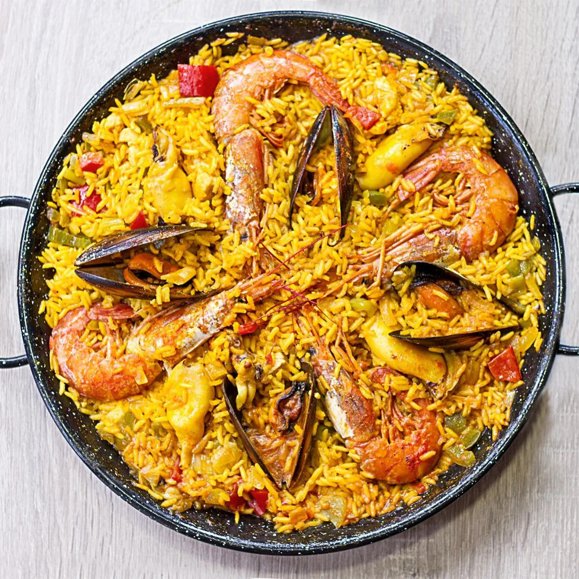

Receita de Paella

Ingredientes
- 2 xícaras de arroz
- 4 xícaras de caldo de galinha ou peixe
- 200g de frango em pedaços
- 200g de camarões
- 100g de ervilhas
- 1 pimentão vermelho em tiras
- 1 cebola picada
- 2 dentes de alho picados
- 1 colher de chá de açafrão
- Azeite de oliva a gosto
- Sal e pimenta a gosto
- Limões para servir
Instruções
- Aqueça o azeite em uma paellera ou frigideira grande.
- Adicione o frango e frite até dourar.
- Adicione a cebola, o alho e o pimentão, refogando até que fiquem macios.
- Incorpore o arroz e o açafrão, mexendo bem para misturar.
- Despeje o caldo quente, tempere com sal e pimenta e leve a ferver.
- Adicione os camarões e as ervilhas. Reduza o fogo e cozinhe por cerca de 20 minutos, sem mexer.
- Desligue o fogo e deixe a paella descansar por 5 minutos.
- Sirva com fatias de limão.
Voltar